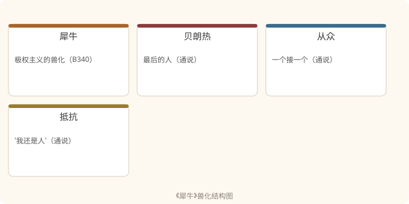

犀牛
一、基本信息
| 作者 | 欧仁·尤涅斯库 |
|---|---|
| 成书/出版 | 1959年（Britannica B340：Rhinoceros (1959)——'a play about totalitarianism, remains Ionesco's most popular work'） Eugene Ionesco — Encyclopaedia Britannica（百科全书） |
| 国别/地区 | 法国 |
| 时代 | 现当代 · 20世纪50年代末 |
| 体裁 | 戏剧 |
| 语言 | 法语 |

《犀牛》兽化结构图（主题·结构图）
二、创作背景
Britannica（B340）：Rhinoceros——'a play about totalitarianism'——'remains Ionesco's most popular work'（关于极权主义；仍是尤涅斯库最受欢迎的作品）。
Britannica（B340）：尤涅斯库戏剧呈现'意义的失落'与'现代文明的机械性'（the meaninglessness of social conventions, the futile and mechanical nature of modern civilization）。
题材（通说待核）：小城居民相继变成犀牛——'独善其身'者的抵抗与溃败。
三、内容脉络
城里人一个个'变犀牛'：从街谈巷议到集体兽化（B340：about totalitarianism——变身情节通说待核）。
贝朗热的独留：'我还是人'的挣扎（人物名与结局通说待核）。
四、主要人物表
| 人物 | 身份 | 说明 |
|---|---|---|
| 贝朗热 | 小职员 | （通说待核，B340未载） |
| 让 | 朋友 | （通说待核，B340未载） |
五、主题与艺术特点
- 极权主义的'兽化'寓言（B340：about totalitarianism）。
- 从众与抵抗（通说待核）。
- 现代文明的机械性（B340：futile and mechanical nature of modern civilization）。
六、影响与评论
- Britannica：'remains Ionesco's most popular work'（B340）。
Eugene Ionesco — Encyclopaedia Britannica（百科全书） - Britannica：荒诞派开创者之一（B340 定位）。
Eugene Ionesco — Encyclopaedia Britannica（百科全书）
七、阅读建议
难点
- 极权主义的历史语境（1930年代罗马尼亚铁卫团说待核）。
- '变身'的舞台美学。
- 《犀牛》中译本（人民文学/上海译文等——通说待核）。
- 法文原版。
尤涅斯库代表作；与《秃头歌女》并读。
八、待核实
- 贝朗热/让人名核对（B340未载）。
- 1959年巴黎首演、1960年伦敦（奥利弗主演说）待核。
- '集体狂热'意象与审巫案的互文待核。